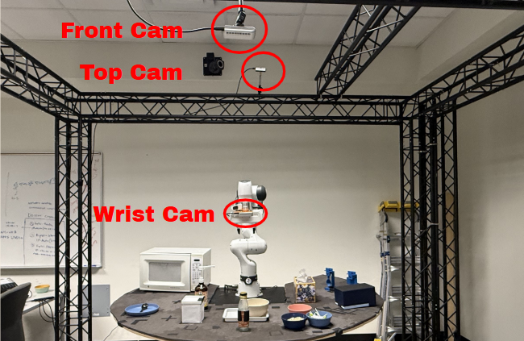

Environments

Kitchen Environments & Tools

This thesis investigates robotic manipulation in kitchen environments, focusing on imitation learning (IL) using Action Chunking with Transformers (ACT) and continual learning via ACT integrated with Low-Rank Adaptation (LoRA). The ACT framework is evaluated on 15 distinct kitchen tasks, focusing on single-arm operations such as Deformable Object Handling, Precision Grasping and Alignment, Force and Motion Control, and Dynamic Manipulation. Collected 20 human demonstrations for each of the 15 kitchen manipulation tasks. For generalization evaluation, 50 demonstrations were collected in three positional variations. In total, 450 demonstrations were collected in this thesis. Furthermore, ACT-LoRA was evaluated to examine its continual learning performance across multiple kitchen tasks. Experimental results reflect the capabilities of ACT and identify limitations, including challenges with non-Markovian behavior, millimeter-level precision, task-specific generalization, and physical interactions. Potential future directions involve addressing these limitations and exploring efficient techniques for managing non-Markovian behavior in imitation learning.
| Task | Demo | Duration (s) |
|---|---|---|
| place_tissue_on_the_plate | 20 | 16.27 |
| press_the_pump_for_soy_sauce | 20 | 23.35 |
| pull_out_a_tissue | 20 | 23.82 |
| pick_up_the_bottle_cap | 20 | 25.87 |
| pick_up_the_container_lid | 20 | 25.93 |
| close_the_microwave_door | 20 | 27.06 |
| put_the_container_lid_back | 20 | 30.92 |
| put_the_bottle_cap_back | 20 | 35.21 |
| cut_sausage | 20 | 39.26 |
| open_the_microwave_door | 20 | 40.26 |
| place_a_spoon_on_the_plate | 20 | 41.86 |
| scoop_seasoning_with_a_spoon | 20 | 47.74 |
| pick_up_the_sausage_from_the_container | 20 | 54.94 |
| pour_strawberries_into_the_bowl | 20 | 55.40 |
| pour_olive_oil_onto_the_potato_dish | 20 | 58.5 |
| Task Name | Sub-task 1 | Success Rate 1 | Sub-task 2 | Success Rate 2 | Overall Rate | Steps | Video |
|---|---|---|---|---|---|---|---|
| Pull Out A Tissue | reach | 10/10 | pull | 10/10 | 10/10 | 185.6 | View Video |
| Place Tissue On The Plate | reach | 10/10 | drop | 10/10 | 10/10 | 130.2857143 | View Video |
| Press The Pump For Soy Sauce | reach | 10/10 | press | 10/10 | 10/10 | 198.6666667 | View Video |
| Pick Up The Container Lid | reach | 9/10 | pick | 9/10 | 9/10 | 238.6 | View Video |
| Pick Up The Bottle Cap | reach | 8/10 | pick | 8/10 | 8/10 | 223.3333333 | View Video |
| Put The Container Lid Back | reach | 10/10 | put | 10/10 | 10/10 | 315 | View Video |
| Put The Bottle Cap Back | reach | 5/10 | drop | 5/10 | 5/10 | 320 | View Video |
| Open The Microwave Door | reach | 10/10 | open | 10/10 | 10/10 | 346 | View Video |
| Close The Microwave Door | reach | 9/10 | close | 9/10 | 9/10 | 257.1666667 | View Video |
| Cut Sausage | reach | 4/10 | cut | 4/10 | 4/10 | 384 | View Video |
| Pour Strawberries Into The Bowl | reach | 8/10 | pour | 8/10 | 8/10 | 409.8 | View Video |
| Pour Olive Oil Onto The Potato Dish | reach | 0/10 | pour | 0/10 | 0/10 | - | View Video |
| Pick Up The Sausage From The Container | reach | 10/10 | pick | 10/10 | 10/10 | 277.4 | View Video |
| Place A Spoon On The Plate | reach | 6/10 | pick | 6/10 | 6/10 | 363.5 | View Video |
| Scoop Seasoning With A Spoon | reach | 10/10 | pour | 10/10 | 10/10 | 434.75 | View Video |